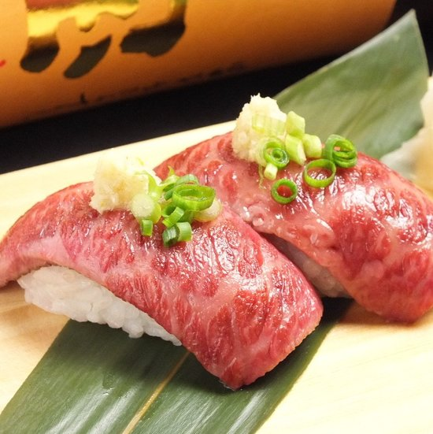

Yakiniku Nikuman Shijo Omi
"One minute on foot from Hankyu Omiya Station! Our restaurant is one where you will find the original seasonings will make our grilled
meats almost habit-forming in their deliciousness! Enjoy grilled meats with our sweet, rich Black Sauce, our miso-based, spicy Red
Sauce, or our Salt Mix, made with rock salt. We particularly recommend a dish we call Hoso. It's a masterpiece, where juicy, savory
tastes burst forth with every bite."